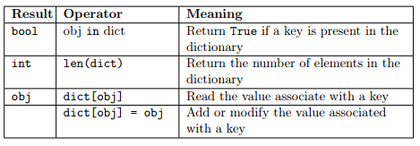

Dictionaries solutions¶
What to do¶
unzip exercises in a folder, you should get something like this:
-jupman.py
-my_lib.py
-other stuff ...
-exercises
|- lists
|- dictionaries.ipynb
|- dictionaries-sol.ipynb
|- other stuff ..
WARNING: to correctly visualize the notebook, it MUST be in an unzipped folder !
open Jupyter Notebook from that folder. Two things should open, first a console and then browser. The browser should show a file list: navigate the list and open the notebook
dictionaries/dictionaries.ipynb
WARNING 2: DO NOT use the Upload button in Jupyter, instead navigate in Jupyter browser to the unzipped folder !
Go on reading that notebook, and follow instuctions inside.
Shortcut keys:
to execute Python code inside a Jupyter cell, press
Control + Enterto execute Python code inside a Jupyter cell AND select next cell, press
Shift + Enterto execute Python code inside a Jupyter cell AND a create a new cell aftwerwards, press
Alt + EnterIf the notebooks look stuck, try to select
Kernel -> Restart
Introduction¶
We will review dictionaries, discuss ordering issues for keys, and finally deal with nested dictionaries
Dict¶
First let’s review Python dictionaries:
Dictionaries map keys to values. Keys must be immutable types such as numbers, strings, tuples (so i.e. no lists are allowed as keys), while values can be anything. In the following example, we create a dictionary d that initially maps from strings to numbers:
[2]:
# create empty dict:
d = dict()
d
[2]:
{}
[3]:
type( dict() )
[3]:
dict
Alternatively, to create a dictionary you can type {} :
[4]:
{}
[4]:
{}
[5]:
type( {} )
[5]:
dict
[6]:
# associate string "some key" to number 4
d['some key'] = 4
d
[6]:
{'some key': 4}
To access a value corresponding to a key, write this:
[7]:
d['some key']
[7]:
4
You can’t associate mutable objects like lists:
d[ ['a', 'mutable', 'list', 'as key'] ] = 3
---------------------------------------------------------------------------
TypeError Traceback (most recent call last)
<ipython-input-204-fb9d60c4e88a> in <module>()
----> 1 d[ ['a', 'mutable', 'list', 'as key'] ] = 3
TypeError: unhashable type: 'list'
But you can associate tuples:
[8]:
d[ ('an', 'immutable', 'tuple', 'as key') ] = 3
d
[8]:
{('an', 'immutable', 'tuple', 'as key'): 3, 'some key': 4}
[9]:
# associate string "some other key" to number 7
d['some other key'] = 7
d
[9]:
{('an', 'immutable', 'tuple', 'as key'): 3, 'some key': 4, 'some other key': 7}
[10]:
# Dictionary is mutable, so you can reassign a key to a different value:
d['some key'] = 5
d
[10]:
{('an', 'immutable', 'tuple', 'as key'): 3, 'some key': 5, 'some other key': 7}
[11]:
# Dictionares are eterogenous, so values can be of different types:
d['yet another key'] = 'now a string!'
d
[11]:
{('an', 'immutable', 'tuple', 'as key'): 3,
'some key': 5,
'some other key': 7,
'yet another key': 'now a string!'}
[12]:
# Keys also can be of eterogeneous types, but they *must* be of immutable types:
[13]:
d[123] = 'hello'
d
[13]:
{('an', 'immutable', 'tuple', 'as key'): 3,
123: 'hello',
'some key': 5,
'some other key': 7,
'yet another key': 'now a string!'}
To iterate through keys, use a ‘for in’ construct :
WARNING: iteration order most often is NOT the same as insertion order!!
[14]:
for k in d:
print(k)
123
some key
some other key
('an', 'immutable', 'tuple', 'as key')
yet another key
Get all keys:
[15]:
d.keys()
[15]:
dict_keys([123, 'some key', 'some other key', ('an', 'immutable', 'tuple', 'as key'), 'yet another key'])
Get all values:
[16]:
d.values()
[16]:
dict_values(['hello', 5, 7, 3, 'now a string!'])
[17]:
# delete a key:
del d['some key']
d
[17]:
{('an', 'immutable', 'tuple', 'as key'): 3,
123: 'hello',
'some other key': 7,
'yet another key': 'now a string!'}
Dictionary methods¶
Recall what seen in the lecture, the following methods are available for dictionaries:

These methods are new to dictionaries and can be used to loop through the elements in them.
ATTENTION: dict.keys() returns a dict_keys object not a list. To cast it to list, we need to call list(dict.keys()).
Functions working on dictionaries¶
As for the other data types, python provides several operators that can be applied to dictionaries. The following operators are available and they basically work as in lists. The only exception being that the operator in checks whether the specified object is present among the keys.

Exercise print key¶
✪ PRINT the value of key 'b', that is, 2
[18]:
d = {'a':6, 'b':2,'c':5}
# write here
d['b']
[18]:
2
Exercise modify dictionary¶
✪ MODIFY the dictionary, by substituting the key c with 8. Then PRINT the dictionary
NOTE: the order in which couples key/value are printed is NOT relevant!
[19]:
d = {'a':6, 'b':2, 'c':5}
# write here
d['c'] = 8
print(d)
{'c': 8, 'a': 6, 'b': 2}
Exercise print keys¶
✪ PRINT a sequence with all the keys, using the appropriate method of dictionaries
[20]:
d = {'a':6, 'b':2,'c':5}
# write here
d.keys()
[20]:
dict_keys(['c', 'a', 'b'])
Exercise print dimension¶
✪ PRINT the number of couples key/value in the dictionary
[21]:
d = {'a':6, 'b':2, 'c':5}
# write here
print(len(d))
3
Exercise print keys as list¶
✪ PRINT a LIST with all the keys in the dictionary
NOTE 1: it is NOT necessary that the list is ordered
NOTE 2: to convert any sequence to a list, use the predefined function
list
[22]:
d = {'a':6, 'b':2,'c':5}
# write here
list(d.keys())
[22]:
['c', 'a', 'b']
Exercise ordered keys¶
✪ PRINT an ordered LIST holding all dictionary keys
NOTE 1: now it is necessary for the list to be ordered
NOTE 2: to convert any sequence to a list, use the predefined function
list
[23]:
d = {'a':6, 'c':2,'b':5}
# write here
my_list = list(d.keys())
my_list.sort() # REMEMBER: sort does NOT return anything !!!
print(my_list)
['a', 'b', 'c']
OrderedDict¶
As we said before, when you scan the keys of a dictionary, the order most often is not the same as the insertion order. To have it predictable, you need to use an OrderedDict
[24]:
# first you need to import it from collections module
from collections import OrderedDict
od = OrderedDict()
# OrderedDict looks and feels exactly as regular dictionaries. Here we reproduce the previous example:
od['some key'] = 5
od['some other key'] = 7
od[('an', 'immutable', 'tuple','as key')] = 3
od['yet another key'] = 'now a string!'
od[123] = 'hello'
od
[24]:
OrderedDict([('some key', 5),
('some other key', 7),
(('an', 'immutable', 'tuple', 'as key'), 3),
('yet another key', 'now a string!'),
(123, 'hello')])
Now you will see that if you iterate with the for in construct, you get exactly the same insertion sequence:
[25]:
for key in od:
print("%s : %s" %(key, od[key]))
some key : 5
some other key : 7
('an', 'immutable', 'tuple', 'as key') : 3
yet another key : now a string!
123 : hello
To create it all at once, since you want to be sure of the order, you can pass a list of tuples representing key/value pairs. Here we reproduce the previous example:
[26]:
od = OrderedDict(
[
('some key', 5),
('some other key', 7),
(('an', 'immutable', 'tuple','as key'), 3),
('yet another key', 'now a string!'),
(123, 'hello')
]
)
od
[26]:
OrderedDict([('some key', 5),
('some other key', 7),
(('an', 'immutable', 'tuple', 'as key'), 3),
('yet another key', 'now a string!'),
(123, 'hello')])
Again you will see that if you iterate with the for in construct, you get exactly the same insertion sequence:
[27]:
for key in od:
print("%s : %s" % (key, od[key]))
some key : 5
some other key : 7
('an', 'immutable', 'tuple', 'as key') : 3
yet another key : now a string!
123 : hello
Exercise: OrderedDict phonebook¶
Write some short code that given three tuples, like the following, prints an OrderedDict which associates names to phone numbers, in the order they are proposed above.
Your code should work with any tuples.
Don’t forget to import the OrderedDict from collections
Example:
t1 = ('Alice', '143242903')
t2 = ('Bob', '417483437')
t3 = ('Charles', '423413213')
after your code should give:
OrderedDict([('Alice', '143242903'), ('Bob', '417483437'), ('Charles', '423413213')])
[28]:
# first you need to import it from collections module
from collections import OrderedDict
t1 = ('Alice', '143242903')
t2 = ('Bob', '417483437')
t3 = ('Charles', '423413213')
# write here
od = OrderedDict([t1, t2, t3])
print(od)
OrderedDict([('Alice', '143242903'), ('Bob', '417483437'), ('Charles', '423413213')])
Exercise: OrderedDict copy¶
Given an OrderedDict od1 containing translations English -> Italian, create a NEW OrderedDict called od2 which contains the same translations as the input one PLUS the translation 'water' : 'acqua'.
NOTE 1: your code should work with any input ordered dict
NOTE 2:
od2MUST hold a NEW OrderedDict !!
Example:
With
od1 = OrderedDict()
od1['dog'] = 'cane'
od1['home'] = 'casa'
od1['table'] = 'tavolo'
after your code you should get:
>>> print(od1)
OrderedDict([('dog', 'cane'), ('home', 'casa'), ('table', 'tavolo')])
>>> print(od2)
OrderedDict([('dog', 'cane'), ('home', 'casa'), ('table', 'tavolo'), ('water', 'acqua')])
[29]:
from collections import OrderedDict
od1 = OrderedDict()
od1['dog'] = 'cane'
od1['home'] = 'casa'
od1['table'] = 'tavolo'
# write here
od2 = OrderedDict(od1)
od2['water'] = 'acqua'
print("od1=", od1)
print("od2=", od2)
od1= OrderedDict([('dog', 'cane'), ('home', 'casa'), ('table', 'tavolo')])
od2= OrderedDict([('dog', 'cane'), ('home', 'casa'), ('table', 'tavolo'), ('water', 'acqua')])
List of nested dictionaries¶
Suppose you have a list of dictionaries which represents a database of employees. Each employee is represented by a dictionary:
{
"name":"Mario",
"surname": "Rossi",
"age": 34,
"company": {
"name": "Candy Apples Inc.",
"sector":"Food"
}
}
The dictionary has several simple attributes like name, surname, age. The attribute company is more complex, because it is represented as another dictionary:
"company": {
"name": "Candy Apples Inc.",
"sector":"Food"
}
[30]:
employees_db = [
{
"name":"Mario",
"surname": "Rossi",
"age": 34,
"company": {
"name": "Candy Apples Inc.",
"sector":"Food"
}
},
{
"name":"Pippo",
"surname": "Rossi",
"age": 20,
"company": {
"name": "Batworks",
"sector":"Clothing"
}
},
{
"name":"Paolo",
"surname": "Bianchi",
"age": 25,
"company": {
"name": "Candy Apples Inc.",
"sector":"Food"
}
}
]
Exercise: print employees¶
Write some code to print all employee names and surnames from the above employees_db
You can assume employees_db has exactly 3 employees (so for cycle is not even needed)
You should obtain:
Mario Rossi
Pippo Rossi
Paolo Bianchi
[31]:
# write here
print(employees_db[0]["name"], employees_db[0]["surname"])
print(employees_db[1]["name"], employees_db[1]["surname"])
print(employees_db[2]["name"], employees_db[2]["surname"])
Mario Rossi
Pippo Rossi
Paolo Bianchi
Exercise: print company names¶
Write some code to print all company names and sector from the above employees_db, without duplicating them. Pay attention to sector lowercase name.
You can assume employees_db has exactly 3 employees (so for cycle is not even needed)
[32]:
# write here
print(employees_db[0]["company"]["name"], "is a", employees_db[0]["company"]["sector"].lower(), "company")
print(employees_db[1]["company"]["name"], "is a", employees_db[1]["company"]["sector"].lower(), "company")
Candy Apples Inc. is a food company
Batworks is a clothing company
Exercises with functions¶
ATTENTION
Following exercises require you to know:
Complex statements: Andrea Passerini slides A03
Functions: Andrea Passerini slides A04
print_val¶
✪ Write the function print_val(d, key) which RETURN the value associated to key
>>> x = print_val({'a':5,'b':2}, 'a')
>>> x
5
>>> y = print_val({'a':5,'b':2}, 'b')
>>> y
2
[33]:
# write here
def print_val(d, key):
return d[key]
#x = print_val({'a':5,'b':2}, 'a')
#x
has_key¶
Write a function has_key(d,key) which PRINTS "found" if diz contains the key key, otherwise PRINTS "not found"
>>> has_key({'a':5,'b':2}, 'a')
found
>>> has_key({'a':5,'b':2}, 'z')
not found
[34]:
# write here
def has_key(d, key):
if key in d:
print("found")
else:
print("not found")
#has_key({'a':5,'b':2}, 'a')
#has_key({'a':5,'b':2}, 'b')
#has_key({'a':5,'b':2}, 'z')
dim¶
✪ Write a function dim(d) which RETURN the associations key-value present in the dictionary
>>> x = dim({'a':5,'b':2,'c':9})
>>> x
3
[35]:
# write here
def dim(d):
return len(d)
#x = dim({'a':5,'b':2,'c':9})
#x
keyring¶
✪ Given a dictionary, write a function keyring which RETURN an ORDERED LIST with all the keys, una at a time
NOTE: the order of keys in this list IS important !
>>> x = keyring({'a':5,'c':2,'b':9})
>>> x
['a','b','c']
[36]:
# write here
def keyring(d):
my_list = list(d.keys())
my_list.sort() # REMEMBER: .sort() does NOT return anything !!
return my_list
#x = keyring({'a':5,'c':2,'b':9})
#x
couples¶
✪ Given a dictionary, write a function couples which PRINTS all key/value couples, one per row
NOTE: the order of the print is NOT important, it si enough to print all couples !
>>> couples({'a':5,'b':2,'c':9})
a 5
c 9
b 2
[37]:
# write here
def couples(d):
for key in d:
print(key,d[key])
#couples({'a':5,'b':2,'c':9})
Verify comprehension¶
ATTENTION
Following exercises require you to know:
Complex statements: Andrea Passerini slides A03
Functions: Andrea Passerini slides A04
Tests with asserts: Following exercises contain automated tests to help you spot errors. To understand how to do them, read before Error handling and testing
histogram¶
✪✪ RETURN a dictionary that for each character in string contains the number of occurrences. The keys are the caracthers and the values are to occurrences
[38]:
def histogram(string):
#jupman-raise
ret = dict()
for c in string:
if c in ret:
ret[c] += 1
else:
ret[c] = 1
return ret
#/jupman-raise
# TEST START - DO NOT TOUCH!
# if you wrote the whole code correct, and execute the cell, Python shouldn't raise `AssertionError`
assert histogram("babbo") == {'b': 3, 'a':1, 'o':1}
assert histogram("") == {}
assert histogram("cc") == {'c': 2}
assert histogram("aacc") == {'a': 2, 'c':2}
# TEST END
listify¶
✪✪ Takes a dictionary d as input and RETURN a LIST with only the values from the dict (so no keys )
To have a predictable order, the function also takes as input a list order where there are the keys from first dictionary ordered as we would like in the resulting list
[39]:
def listify(d, order):
#jupman-raise
ret = list()
for element in order:
ret.append (d[element])
return ret
#/jupman-raise
# TEST START - DO NOT TOUCH!
# if you wrote the whole code correct, and execute the cell, Python shouldn't raise `AssertionError`
assert listify({}, []) == []
assert listify({'ciao':123}, ['ciao']) == [123]
assert listify({'a':'x','b':'y'}, ['a','b']) == ['x','y']
assert listify({'a':'x','b':'y'}, ['b','a']) == ['y','x']
assert listify({'a':'x','b':'y','c':'x'}, ['c','a','b']) == ['x','x','y']
assert listify({'a':'x','b':'y','c':'x'}, ['b','c','a']) == ['y','x','x']
assert listify({'a':5,'b':2,'c':9}, ['b','c','a']) == [2,9,5]
assert listify({6:'x',8:'y',3:'x'}, [6,3,8]) == ['x','x','y']
# TEST END
tcounts¶
✪✪ Takes a list of tuples. Each tuple has two values, the first is an immutable object and the second one is an integer number (the counts of that object). RETURN a dictionary that for each immutable object found in the tuples, associate the total count found for it.
See asserts for examples
[40]:
def tcounts(lst):
ret = {}
for c in lst:
if c[0] in ret:
ret[c[0]] += c[1]
else:
ret[c[0]] = c[1]
return ret
# TEST START - DO NOT TOUCH!
# if you wrote the whole code correct, and execute the cell, Python shouldn't raise `AssertionError`
assert tcounts([]) == {}
assert tcounts([('a',3)]) == {'a':3}
assert tcounts([('a',3),('a',4)]) == {'a':7}
assert tcounts([('a',3),('b',8), ('a',4)]) == {'a':7, 'b':8}
assert tcounts([('a',5), ('c',8), ('b',7), ('a',2), ('a',1), ('c',4)]) == {'a':5+2+1, 'b':7, 'c': 8 + 4}
# TEST END
inter¶
✪✪ Write a function inter(d1,d2) which takes two dictionaries and RETURN a SET of keys for which the couple is the same in both dictionaries
Example
>>> a = {'key1': 1, 'key2': 2 , 'key3': 3}
>>> b = {'key1': 1 ,'key2': 3 , 'key3': 3}
>>> inter(a,b)
{'key1','key3'}
[41]:
def inter(d1, d2):
#jupman-raise
res = set()
for key in d1:
if key in d2:
if d1[key] == d2[key]:
res.add(key)
return res
#/jupman-raise
# TEST START - DO NOT TOUCH!
# if you wrote the whole code correct, and execute the cell, Python shouldn't raise `AssertionError`
assert inter({'key1': 1, 'key2': 2 , 'key3': 3}, {'key1':1 ,'key2':3 , 'key3':3}) == {'key1', 'key3'}
assert inter(dict(), {'key1':1 ,'key2':3 , 'key3':3}) == set()
assert inter({'key1':1 ,'key2':3 , 'key3':3}, dict()) == set()
assert inter(dict(),dict()) == set()
# TEST END
unique_vals¶
✪✪ Write a function unique_vals(d) which RETURN a list of unique values from the dictionary. The list MUST be ordered alphanumerically
Question: We need it ordered for testing purposes. Why?
to order the list, use method .sort()
Example:
>>> unique_vals({'a':'y','b':'x','c':'x'})
['x','y']
[42]:
def unique_vals(d):
#jupman-raise
s = set(d.values())
ret = list(s) # we can only sort lists (sets have no order)
ret.sort()
return ret
#/jupman-raise
# TEST START - DO NOT TOUCH!
# if you wrote the whole code correct, and execute the cell, Python shouldn't raise `AssertionError`
assert unique_vals({}) == []
assert unique_vals({'a':'y','b':'x','c':'x'}) == ['x','y']
assert unique_vals({'a':4,'b':6,'c':4,'d':8}) == [4,6,8]
# TEST END
uppers¶
✪✪ Takes a list and RETURN a dictionary which associates to each string in the list the same string but with all characters uppercase
Example:
>>> uppers(["ciao", "mondo", "come va?"])
{"ciao":"CIAO", "mondo":"MONDO", "come va?":"COME VA?"}
Ingredients:
for cycle
.upper()method
[43]:
def uppers(xs):
#jupman-raise
d = {}
for s in xs:
d[s] = s.upper()
return d
#/jupman-raise
# TEST START - DO NOT TOUCH!
# if you wrote the whole code correct, and execute the cell, Python shouldn't raise `AssertionError`
assert uppers([]) == {}
assert uppers(["ciao"]) == {"ciao":"CIAO"}
assert uppers(["ciao", "mondo"]) == {"ciao":"CIAO", "mondo":"MONDO"}
assert uppers(["ciao", "mondo", "ciao"]) == {"ciao":"CIAO", "mondo":"MONDO"}
assert uppers(["ciao", "mondo", "come va?"]) == {"ciao":"CIAO", "mondo":"MONDO", "come va?":"COME VA?"}
# TEST END
filtraz¶
✪✪ RETURN a NEW dictionary, which contains only the keys key/value of the dictionary d in input in which in the key is present the character 'z'
Example:
filtraz({'zibibbo':'to drink',
'mc donald': 'to avoid',
'liquirizia': 'ze best',
'burger king': 'zozzerie'
})
must RETURN the NEW dictionary
{
'zibibbo':'da bere',
'liquirizia': 'ze best'
}
In other words, we only kept those keys which contained at least a z. We do not care about z in values.
Ingredients:
To check if z is in the key, use the operator in, for example
'z' in 'zibibbo' == True
'z' in 'mc donald' == False
[44]:
def filtraz(diz):
#jupman-raise
ret = {}
for chiave in diz:
if 'z' in chiave:
ret[chiave] = diz[chiave]
return ret
#/jupman-raise
# TEST START - DO NOT TOUCH!
# if you wrote the whole code correct, and execute the cell, Python shouldn't raise `AssertionError`
assert filtraz({}) == {}
assert filtraz({'az':'t'}) == {'az':'t'}
assert filtraz({'zc':'w'}) == {'zc':'w'}
assert filtraz({'b':'h'}) == {}
assert filtraz({'b':'hz'}) == {}
assert filtraz({'az':'t','b':'hz'}) == {'az':'t'}
assert filtraz({'az':'t','b':'hz','zc':'w'}) == {'az':'t', 'zc':'w'}
# TEST END
powers¶
✪✪ RETURN a dictionary in which keys are integer numbers from 1 to n included, and respective values are the sqaures of the keys.
Example:
powers(3)
should return:
{
1:1,
2:4,
3:9
}
[45]:
def powers(n):
#jupman-raise
d=dict()
for i in range(1,n+1):
d[i]=i**2
return d
#/jupman-raise
# TEST START - DO NOT TOUCH!
# if you wrote the whole code correct, and execute the cell, Python shouldn't raise `AssertionError`
assert powers(1) == {1:1}
assert powers(2) == {
1:1,
2:4
}
assert powers(3) == {
1:1,
2:4,
3:9
}
assert powers(4) == {
1:1,
2:4,
3:9,
4:16
}
# TEST END
dilist¶
✪✪ RETURN a dictionary with n couples key-value, where the keys are integer numbers from 1 to n included, and to each key i is associated a list of numbers from 1 to i.
NOTE: the keys are integer numbers, NOT strings !!!!
Example
>>> dilist(3)
{
1:[1],
2:[1,2],
3:[1,2,3]
}
[46]:
def dilist(n):
#jupman-raise
ret = dict()
for i in range(1,n+1):
lista = []
for j in range(1,i+1):
lista.append(j)
ret[i] = lista
return ret
#/jupman-raise
# TEST START - DO NOT TOUCH!
# if you wrote the whole code correct, and execute the cell, Python shouldn't raise `AssertionError`
assert dilist(0) == dict()
assert dilist(1) == {
1:[1]
}
assert dilist(2) == {
1:[1],
2:[1,2]
}
assert dilist(3) == {
1:[1],
2:[1,2],
3:[1,2,3]
}
# TEST END
prefixes¶
✪✪ Write a functionprefixes which given
a dictionary d having as keys italian provincies and as values their phone numbers (note: prefixes are also strings !) - a list provinces with the italian provinces
RETURN a list of prefixes corresponding to provinces of given list.
Example:
>>> prefissi({
'tn':'0461',
'bz':'0471',
'mi':'02',
'to':'011',
'bo':'051'
},
['tn','to', 'mi'])
['0461', '011', '02']
HINTS:
intialize an empty list to return
go through provinces list and take corresponding prefixes from the dictionary
[47]:
def prefixes(d, provinces):
#jupman-raise
ret = []
for province in provinces:
ret.append(d[province])
return ret
#/jupman-raise
# TEST START - DO NOT TOUCH!
# if you wrote the whole code correct, and execute the cell, Python shouldn't raise `AssertionError`
assert prefixes({'tn':'0461'}, []) == []
assert prefixes({'tn':'0461'}, ['tn']) == ['0461']
assert prefixes({'tn':'0461', 'bz':'0471'}, ['tn']) == ['0461']
assert prefixes({'tn':'0461', 'bz':'0471'}, ['bz']) == ['0471']
assert prefixes({'tn':'0461', 'bz':'0471'}, ['tn','bz']) == ['0461', '0471']
assert prefixes({'tn':'0461', 'bz':'0471'}, ['bz','tn']) == ['0471', '0461']
assert prefixes({'tn':'0461',
'bz':'0471',
'mi':'02',
'to':'011',
'bo':'051'
},
['tn','to', 'mi']) == ['0461', '011', '02']
# TEST END
Managers¶
Let’s look at this managers_db data structure. It is a list of dictionaries of managers.
Each manager supervises a department, which is also represented as a dictionary.
Each department can stay either in building
"A"or building"B"
[48]:
managers_db = [
{
"name":"Diego",
"surname": "Zorzi",
"age": 34,
"department": {
"name": "Accounting",
"budget":20000,
"building":"A"
}
},
{
"name":"Giovanni",
"surname": "Tapparelli",
"age": 45,
"department": {
"name": "IT",
"budget":10000,
"building":"B"
}
},
{
"name":"Sara",
"surname": "Tomasi",
"age": 25,
"department": {
"name": "Human resources",
"budget":30000,
"building":"A"
}
},
{
"name":"Giorgia",
"surname": "Tamanin",
"age": 28,
"department": {
"name": "R&D",
"budget":15000,
"building":"A"
}
},
{
"name":"Paola",
"surname": "Guadagnini",
"age": 30,
"department": {
"name": "Public relations",
"budget":40000,
"building":"B"
}
}
]
managers: extract_managers¶
✪✪ RETURN the names of the managers in a list
[49]:
def extract_managers(db):
#jupman-raise
ret = []
for d in db:
ret.append(d["name"])
return ret
#/jupman-raise
# TEST START - DO NOT TOUCH!
# if you wrote the whole code correct, and execute the cell, Python shouldn't raise `AssertionError`
assert extract_managers([]) == []
# if it doesn't find managers_db, remember to executre the cell above which defins it !
assert extract_managers(managers_db) == ['Diego', 'Giovanni', 'Sara', 'Giorgia', 'Paola']
# TEST END
managers: extract_departments¶
✪✪ RETURN the names of departments in a list.
[50]:
def extract_departments(db):
#jupman-raise
ret = []
for d in db:
ret.append(d["department"]["name"])
return ret
#/jupman-raise
# TEST START - DO NOT TOUCH!
# if you wrote the whole code correct, and execute the cell, Python shouldn't raise `AssertionError`
assert extract_departments([]) == []
# if it doesn't find managers_db, remember to execute the cell above which defins it !
assert extract_departments(managers_db) == ["Accounting", "IT", "Human resources","R&D", "Public relations"]
# TEST END
managers: avg_age¶
✪✪ RETURN the average age of managers
[51]:
def avg_age(db):
#jupman-raise
s = 0
for d in db:
s += d["age"]
return s / len(db)
#/jupman-raise
# TEST START - DO NOT TOUCH!
# if you wrote the whole code correct, and execute the cell, Python shouldn't raise `AssertionError`
# since the function returns a float we can't compare for exact numbers but
# only for close numbers with the function math.isclose
import math
assert math.isclose(avg_age(managers_db), (34 + 45 + 25 + 28 + 30) / 5)
# TEST END
managers: buildings¶
✪✪ RETURN the buildings the departments belong to, WITHOUT duplicates !!!
[52]:
def buildings(db):
#jupman-raise
ret = []
for d in db:
building = d["department"]["building"]
if building not in ret:
ret.append(building)
return ret
#/jupman-raise
# TEST START - DO NOT TOUCH!
# if you wrote the whole code correct, and execute the cell, Python shouldn't raise `AssertionError`
assert buildings([]) == []
assert buildings(managers_db) == ["A", "B"]
# TEST END
medie¶
✪✪ Given a dictionary structured as a tree regarding the grades of a student in class V and VI, RETURN an array containing the average for each subject
Example:
>>> averages([
{'id' : 1, 'subject' : 'math', 'V' : 70, 'VI' : 82},
{'id' : 1, 'subject' : 'italian', 'V' : 73, 'VI' : 74},
{'id' : 1, 'subject' : 'german', 'V' : 75, 'VI' : 86}
])
[ 76.0 , 73.5, 80.5 ]
which corresponds to
[ (70+82)/2 , (73+74)/2, (75+86)/2 ]
[53]:
def averages(lista):
ret = [0.0, 0.0, 0.0]
for i in range(len(lista)):
ret[i] = (lista[i]['V'] + lista[i]['VI']) / 2
return ret
# TEST START - DO NOT TOUCH!
# if you wrote the whole code correct, and execute the cell, Python shouldn't raise `AssertionError`
import math
def is_list_close(lista, listb):
""" Verifies the float numbers in lista are similar to nubers in listb
"""
if len(lista) != len(listb):
return False
for i in range(len(lista)):
if not math.isclose(lista[i], listb[i]):
return False
return True
assert is_list_close(averages([
{'id' : 1, 'subject' : 'math', 'V' : 70, 'VI' : 82},
{'id' : 1, 'subject' : 'italian', 'V' : 73, 'VI' : 74},
{'id' : 1, 'subject' : 'german', 'V' : 75, 'VI' : 86}
]),
[ 76.0 , 73.5, 80.5 ])
# TEST END
has_pref¶
✪✪ A big store has a database of clients modelled as a dictionary which associates customer names to their preferences regarding the categories of articles the usually buy:
{
'aldo':['cinema', 'music', 'sport'],
'giovanni':['music'],
'giacomo':['cinema', 'videogames']
}
Given the dictionary, the customer name and a category, write a function has_pref which RETURN True if that client has the given preference, False otherwise
Example:
ha_pref({
'aldo':['cinema', 'musica', 'sport'],
'giovanni':['musica'],
'giacomo':['cinema', 'videogiochi']
}, 'aldo', 'musica')
deve ritornare True perchè ad aldo piace la musica, invece
has_pref({'aldo':['cinema', 'music', 'sport'],
'giovanni':['music'],
'giacomo':['cinema', 'videogames']
}, 'giacomo', 'sport')
Must return False because Giacomo does not like sport
[54]:
def has_pref(d, name, pref):
#jupman-raise
if name in d:
return pref in d[name]
else:
return False
#/jupman-raise
# TEST START - DO NOT TOUCH!
# if you wrote the whole code correct, and execute the cell, Python shouldn't raise `AssertionError`
assert has_pref({}, 'a', 'x') == False
assert has_pref({'a':[]}, 'a', 'x') == False
assert has_pref({'a':['x']}, 'a', 'x') == True
assert has_pref({'a':['x']}, 'b', 'x') == False
assert has_pref({'a':['x','y']}, 'a', 'y') == True
assert has_pref({'a':['x','y'],
'b':['y','x','z']}, 'b', 'y') == True
assert has_pref({'aldo':['cinema', 'music', 'sport'],
'giovanni':['music'],
'giacomo':['cinema', 'videogames']
}, 'aldo', 'music') == True
assert has_pref({'aldo':['cinema', 'music', 'sport'],
'giovanni':['music'],
'giacomo':['cinema', 'videogames']
}, 'giacomo', 'sport') == False
# TEST END
[ ]: